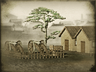

Basic Unit Statistics (can be modified by difficulty level, arts, skills, traits and retainers)
| Recruitment Cost | 1570 | |
| Upkeep Cost | 200 | |
| Melee Attack | 4 | 11% |
| Charge Bonus | 9 | 18% |
| Bonus vs Cavalry | 0 | 0% |
| Range | 550 | 84% |
| Accuracy | 25 | 25% |
| Reloading Skill | 25 | 25% |
| Ammunition | 20 | 25% |
| Melee Defence | 4 | 11% |
| Armour | 1 | 6% |
| Morale | 4 | 8% |
Strengths & Weaknesses
- Very long range and devastating explosive shells.
- Good accuracy and slow reload rate.
- Weak in melee.
- Average morale.
Abilities
- Shrapnel Shot - This shell explodes mid-air, sending deadly metal fragments down upon targeted enemy units. Once activated, there will be a cooling-off period before the ability can be used again.
Requires
- Buildings: 
Description
Properly employed, artillery is the lord of the battlefield.
These muzzle-loading artillery pieces are deadly weapons indeed, although somewhat slow to reload. However, their long range and accuracy make "Parrott rifles" extremely useful weapons for long range bombardments against almost any enemy. To those under bombardment it feels like they can drop devastating explosive shells almost anywhere! However, like all artillery, the crews will be quickly overrun in close combat, or if left exposed, to cavalry attack. A Parrott rifle, named after its inventor, Robert Parker Parrott, was an impressive piece of metalworking, no matter what its actual size. The cast iron barrel was reinforced by a wrought iron band around the breech end, but this was not always enough to prevent a gun from bursting. Parrott's flash of genius was in the way he made the guns, putting on the band red hot, and cooling the entire assembly by pouring water down the muzzle. This made the weapons stronger than other muzzle loaders. It was then a straightforward matter to machine cut the rifling grooves. Both sides in the American Civil War used Parrott rifles, with a 300-pounder, 10 inch bore example being used against Fort Sumter in 1863. This was probably the largest land Parrott gun used, although naval examples did fire 200-pounder shells.